판금제관산업기사 (2003-05-25 기출문제)
1과목: 판금제관재료, 공구 및 기계
1. 판금 해머(hammer)의 규격은 무엇으로 표시하는가?
- 해머자루의 길이
- 해머의 전체길이
- 머리부분의 중량
- 타격면의 단면적
(정답률: 알수없음)

2. 제관 작업용 기계 중 전단용 기계는?
- 매니퓰레이터(manipulator)
- 갱 슬리터(gang slitter)
- 비딩 머신(beading machine)
- 포밍 머신(forming machine)
(정답률: 알수없음)
3. 원형날을 아래위로 여러개 회전시켜 폭이 넓은 판에서 부터 폭이 좁은 띠모양으로 연속 전단할수 있는 기계는?
- 로터리 시어(rotary shear)
- 핸드 시어(hand shear)
- 서큘러 시어(circular shear)
- 갱 슬리터(gang slitter)
(정답률: 알수없음)
4. 다음 중 프레스 브레이크(press break)의 장점에 해당되지 않는 것은?
- 여러가지 모양을 1행정으로 동시에 작업할 수 있다.
- 작업면이 길므로 여러가지 모양을 동시에 설치할 수 있다.
- 강한 압력이 작용하므로 전단 작업으로 많이 쓰인다.
- 대량 생산용으로 적당하다.
(정답률: 알수없음)
5. 수직면을 회전하는 좌우 2개의 원판이 있고, 수평면에서 회전하는 중앙 원판이 마찰력에 의하여 회전하면서 나사에 의하여 램이 상하운동을 하는 프레스는?
- 캠 프레스
- 익센트릭 프레스
- 크랭크 프레스
- 마찰 프레스
(정답률: 알수없음)
6. 아세틸렌 발생기의 취급에 관한 설명 중 틀린 것은?
- 발생기에는 화기를 가까이 하지 말것
- 가스가 새는 것을 조사할 때는 비눗물을 사용할 것
- 수실의 물이 얼지 않도록 소금물을 사용할 것
- 작업 중에 발생기의 물이 부족하지 않도록 주의할 것
(정답률: 알수없음)
7. 해머 작업시 안전에 관한 주의 사항 중 맞지 않는 것은?
- 슬레지 해머(sledge hammer)를 사용할 때에는 보안경을 써야 한다.
- 끝은 과도하게 둥근 것을 사용하지 말아야 한다.
- 해머의 타격면이 손상되지 않도록 오일(Oil)을 바르고 사용한다.
- 해머의 머리가 찌그러질 때에는 자주 드레스하여 사용한다.
(정답률: 알수없음)
8. 안전 작업 중 옳지 않은 것은?
- 재료, 제품등을 적재할 때는 중심(重心)을 낮게한다.
- 통로는 항시 물을 많이 뿌리고 먼지가 나지않게 청소하면 좋다.
- 기름, 구리스, 절삭칩등이 바닥에 흘렀으면 즉시 제거한다.
- 가공품은 일정장소에 정리하여 둔다.
(정답률: 알수없음)
9. 굽힘용기계가 아닌 것은?
- 머시닝 센터
- 벤딩 롤링 머신
- 앵글 벤더
- 탄젠트 벤더
(정답률: 알수없음)
10. 높이 게이지(height gauge)의 사용 목적 중 틀린 것은?
- 금긋기를 할 수 있다.
- 실제 높이를 측정할 수 있다.
- 홈의 깊이를 측정할 수 있다.
- 다이얼 게이지를 붙여 비교 측정할 수 있다.
(정답률: 알수없음)
11. 다음 고장력 강판에 대한 설명으로 맞지 않는 것은?
- 인장강도가 대단히 높다.
- Ni,Cr,Mo등 소량의 특수 원소를 첨가한다.
- 차량, 선박등에 사용하며 재질은 림드강이다.
- 연강에 비하여 경도가 높고, 내마모성도 양호하다.
(정답률: 알수없음)
12. 건축,교량,철도,차량등에 사용되는 구조용 압연강재로서 특히 우수한 용접성을 필요로 하는 경우에 사용되는 용접 구조용 압연강재의 기호는?
- SPCC
- SPHC
- SM400A
- SGHC
(정답률: 알수없음)
13. 경량형강의 단면형 중 모자형강은 어느 것인가?
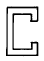
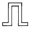
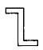
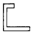
(정답률: 알수없음)
14. 아연 도금 강판의 두께는 보통 어떻게 나타내는가?
- 도금 전의 두께로 나타낸다.
- 도금 후의 두께로 나타낸다.
- 가공한 후의 두께로 나타낸다.
- 도금의 부착량으로 나타낸다.
(정답률: 알수없음)
15. 스테인리스강의 분류에 해당하지 않는 것은?
- 오스테나이트계
- 페라이트계
- 소르바이트계
- 마텐자이트계
(정답률: 알수없음)
16. 6.4 황동에 철을 1~2% 첨가한 철 황동으로 강도가 크고 내식성이 좋아 광산기계 등에 사용되는 것은?
- 문쯔메탈
- 톰백
- 애드미멀티 황동
- 델타 메탈
(정답률: 알수없음)
17. 알루미늄 합금의 성질 중 틀린 것은?
- 연성과 전성이 좋다.
- 열과 전기의 양도체이다.
- 염산에는 특히 강하다.
- 용접시 용제가 필요하다.
(정답률: 알수없음)
18. 다음 중 열경화성 수지가 아닌 것은?
- 베이클라이트
- 아크릴
- 페놀 수지
- 에폭시 수지
(정답률: 알수없음)
19. 평강의 치수를 나타내는 방법은?
- 두께(mm) x 나비(mm) - 길이(m)
- 두께(cm) x 나비(cm) - 길이(m)
- 두께(mm) x 나비(mm) - 길이(cm)
- 두께(mm) x 나비(mm) - 길이(mm)
(정답률: 알수없음)
20. 탄소강의 담금질 조직 중 경도와 강도가 가장 높은 것은?
- 트루스타이트
- 오스테나이트
- 마텐자이트
- 소르바이트
(정답률: 알수없음)
2과목: 판금제관공작법
21. 제작용 조립도면에서 일반적인 규격품의 규격 표시란으로 가장 적합한 란은?
- 품명란
- 재질란
- 표제란
- 비고란
(정답률: 알수없음)
22. 다음 중 1점 쇄선으로 표시하지 않는 선은?
- 숨은선
- 기어의 피치선
- 절단선
- 중심선
(정답률: 알수없음)
23. 대칭 도형의 생략에 관한 설명 중 틀린 것은?
- 대칭 중심선의 한쪽을 생략할 수 있다.
- 대칭 중심선의 양끝에 대칭도시기호(짧은 2개의 평행한 가는선)을 붙인다.
- 대칭도시기호를 생략하는 경우는 대칭 중심선을 약간 넘은 부분까지 그린다.
- 대칭도시기호를 생략하는 경우는 대칭 중심선을 약간 넘은 부분은 파단선으로 마감한다.
(정답률: 알수없음)
24. 도면과 같이 용접기호가 기입 되었을 때 내용을 잘못 해석한 것은?
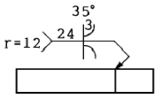
- 루트의 간격은 3mm이다.
- 홈 깊이는 24mm 이다.
- 루트의 반지름은 12mm이다.
- 플레어 X형을 나타낸다.
(정답률: 알수없음)
25. 기계 구조물의 용접부분에 비파괴 탐상 시험기호가 PT-D로 표시되는 시험인 것는?
- 자분 형광 탐상시험
- 일반 형광 탐상시험
- 비형광 침투 탐상시험
- 일반 침투 탐상시험
(정답률: 알수없음)
26. 그림과 같이 절단된 편심 원뿔의 전개법으로 가장 적합한 것은?
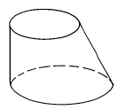
- 삼각형법
- 평행선법
- 사각형법
- 동심원법
(정답률: 알수없음)
27. 3각법으로 그린 보기와 정면도와 평면도에 가장 적합한 우측면도은?
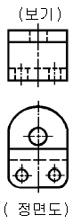
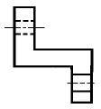
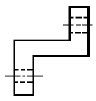
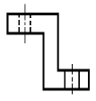
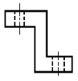
(정답률: 알수없음)
28. 다음 입체도에서 화살표 방향이 정면도일 경우 평면도로 가장 적합한 것은?
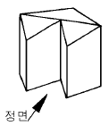
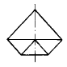
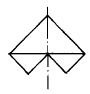
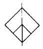
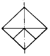
(정답률: 알수없음)
29. 다음 KS 나사의 표시기호에 대한 설명으로 잘못된 것은?
- 호칭 기호 M 은 미터 나사이다.
- 호칭 기호 UNF 는 유니파이 가는 나사이다.
- 호칭 기호 PT 는 관용 평행 나사 이다.
- 호칭 기호 TW 는 사다리꼴 나사이다.
(정답률: 알수없음)
30. 입체도를 제 3각법으로 투상한 정면도와 우측면도를 보고 평면도로 가장 적합한 투상은?
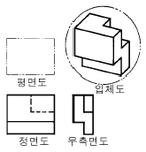
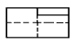
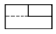
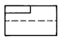
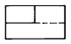
(정답률: 알수없음)
31. 삼각형에 있어서 밑변을 a, 높이를 b, 빗변을 c라고 하면 피타고라스의 정리에 의하여 c2=a2+b2이다. 피타고라스의 정리를 이용하여 원추의 외곽선 ℓ 을 구하면?
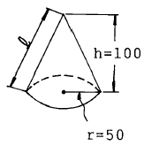
- 111.8
- 100
- 150
- 122.2
(정답률: 알수없음)
32. 전개도를 그리는 방법으로 잘못된 것은?
- 평행선을 그려서 전개하는 방법
- 직각을 그어서 전개하는 방법
- 삼각형을 그어서 전개하는 방법
- 방사선을 그려서 전개하는 방법
(정답률: 알수없음)
33. 어떤 물체의 전개도를 그리는데 있어서 가장 중요한 것은?
- 실장
- 방향성
- 용기화법
- 삼각형법
(정답률: 알수없음)
34. 판재에서 뽑힌 부분이 스크랩이 되고 남는 부분이 제품이 되는 가공법을 무엇이라 하는가?
- 셰이빙(shaving)
- 펀칭(punching)
- 트리밍(trimming)
- 블랭킹(blanking)
(정답률: 알수없음)
35. 6mm 판재를 그림과 같이 구부리고자 한다. 필요한 판재의 길이는 얼마나 되는가?
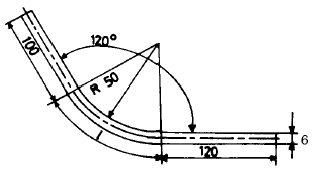
- 265.47
- 275.47
- 280.47
- 285.47
(정답률: 알수없음)
36. 오므림률의 수치에 대해 옳게 설명한 것은?
- 제품 지름에 대한 소재판 지름의 비를 말한다.
- 오므림률의 수치가 크면 제품의 높이는 낮아진다.
- 오므림률의 수치가 크면 가공이 어렵다.
- 오므림률의 수치가 크면 재료의 오므리기 변형이 커진다.
(정답률: 알수없음)
37. 고무 또는 유연한 재료로 만든 밀폐된 압력실 속에 액체를 가득 채우고 다이나 펀치를 사용하는 가공법으로 디프드로잉이나 복잡한 것을 드로잉 가공하는데 편리한 가공법은?
- 마폼법
- 탄성폼법
- 하이드로폼법
- 니트로폼법
(정답률: 알수없음)
38. 가스 용접에서 모재 두께 t가 1∼4 mm일 때 용접봉 지름 D를 결정하는 근사식은?
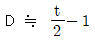
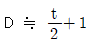
- D ≒ t/2
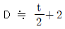
(정답률: 알수없음)
39. 스테인리스 강판의 납땜이 곤란한 주된 이유는?
- 니켈을 함유하고 있어서
- 강한 산화막이 있어서
- 크롬의 함유량이 많아서
- 재질의 경도가 강해서
(정답률: 알수없음)
40. 얇은 판재에 여러가지 통풍관의 세로 모서리 심으로 통풍장치, 난방 장치에 이용되는 심은?
- 캡 스트립 심(cap strip seam)
- 피츠버그 심(pittsburgh seam)
- 핸디 심(handy seam)
- 더브테일 심(dovetail seam)
(정답률: 알수없음)
3과목: 기계제도 및 용접일반
41. 다음 리벳 접합에 관한 설명 중 맞는 것은?
- 리벳 접합은 어떠한 경우라도 한쪽 가장자리에서부터 순차적으로 해야 한다.
- 두 모재의 강도가 서로 다를 때는 강도가 약한 모재의 재질과 같은 리벳을 사용한다.
- 너무 가열한 리벳은 냉각 후 재차 가열하여 사용한다.
- 둥근머리 리벳의 호칭길이는 리벳의 전체길이로 나타낸다.
(정답률: 알수없음)
42. 판재의 끝은 코킹 하기 쉽도록 x를 몇 도 정도로 하는가?
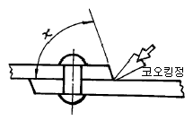
- 45° ~ 50°
- 75° ~ 85°
- 55° ~ 60°
- 35° ~ 40°
(정답률: 알수없음)
43. 파괴시험 중 샤르피(charpy)식과 아이조드(Izod) 식으로 나누어지는 기계적 시험법은?
- 굽힘시험
- 경도시험
- 충격시험
- 피로시험
(정답률: 알수없음)
44. 용접 후 용접부의 결함을 찾기위한 검사밥법 중 비파괴검사의 종류가 아닌 것은?
- 외관 검사
- X선 검사
- 자기 검사
- 부식 시험
(정답률: 알수없음)
45. 강판으로 원통을 성형할 때 그림의 전개도에서 L을 구하는 식으로 맞는 것은? (단, 정밀도는 외경을 기준으로 함)
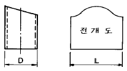
- L = D2 + π
- L = D + π3
- L = π∙(D-t)
- L = π∙(D+t)
(정답률: 알수없음)
46. 제관 작업에서 최소 굽힘 반지름에 대한 설명 중 틀린 것은?
- 판의 나비가 판재두께의 8배 이상으로 될때 두께에 대한 최소 굽힘 반지름값은 대체로 일정하다.
- 두께가 두꺼울수록 어느 일정두께까지는 굽힘 반지름이 커진다.
- 방향성에 따라 값이 압연방향과 평행방향인 경우가 작아진다.
- 판재를 굽힐때 균열이 생기지 않고 굽힐 수 있는 제일 작은 굽힘반지름을 말한다.
(정답률: 알수없음)
47. 서브머지드 아크 용접(sebmerged arc welding)을 설명한 것 중 틀린 것은?
- 유니온 멜트 용접(Union melt welding)이라고도 한다.
- 이음 홈이 좁으므로 용접 재료비가 적게들어 경제적이다.
- 용접할 때 아크(arc)가 잘 보여 용접상태를 알아 볼수 있다.
- 용접선이 구부러지거나 짧으면 비능률적이다.
(정답률: 알수없음)
48. 철골 구조물 도면에 표시하는 사항이 아닌 것은?
- 사용 강재의 종류
- 볼트 사용시 품질 구분
- 접촉면, 기둥 이음매 등의 마무리 정도
- 사용 강재의 가격
(정답률: 알수없음)
49. 보일러의 내부에서 원주응력(후프응력)식을 나타내는 것은? (단, P=내압, D=내경, t=철판의 두께, σ =인장응력)
- σ = 2t/PD
- σ = 4t/PD
- σ = PD/2t
- σ = PD/4t
(정답률: 알수없음)
50. 철골 구조에서 인장재와 압축재에 관한 설명으로 타당성이 없는 것은?
- 인장재는 접합부에서 국부변형이 크게 일어나지 않도록 해야 한다.
- 인장응력을 받는 부재를 인장재라 한다.
- 압축재는 인장재와 달리 좌굴현상이 일어나지 않는다.
- 압축재의 단면 설계는 인장재보다 복잡해진다.
(정답률: 알수없음)
51. 지름 100mm의 소재를 드로잉(drawing)하며 지름 70mm의 원통을 만들었다. 이 때 드로잉율은 얼마인가? 또, 이 70mm 지름의 용기를 재드로잉율 0.8을 사용하여 재드로잉하면 재드로잉 후의 용기 지름은 얼마인가?
- 드로잉율 0.7, 재드로잉 후 지름 56mm
- 드로잉율 1.4, 재드로잉 후 지름 50mm
- 드로잉율 0.7, 재드로잉 후 지름 70mm
- 드로잉율 1.4, 재드로잉 후 지름 100mm
(정답률: 알수없음)
52. 제품의 한쪽 또는 양쪽에 돌기를 만들어 용접하는 저항 용접법은?
- 점 용접(spot welding)
- 프로젝션 용접(projection welding)
- 심 용접(seam welding)
- 업셋 용접(upset welding)
(정답률: 알수없음)
53. 너트의 풀림 방지를 위한 일반적인 방법이 아닌 것은?
- 로크 너트에 의한 방법
- 와셔를 이용하는 방법
- 철사에 의한 방법
- 용접에 의한 방법
(정답률: 알수없음)
54. 다음 그림의 부정정 차수(m) 값은? (단, 절점은 모두 핀 절점 임.)
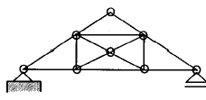
- -1
- 0
- +1
- +2
(정답률: 알수없음)
55. 수압시험에 있어서 내압 시험 압력은 최고 허용 압력의 약 몇 배 정도인가?
- 0.5배
- 1.0배
- 1.5배
- 2.0배
(정답률: 알수없음)
56. 동력용 편심 프레스에서 편심부의 높이 조정은 무엇으로 하는가?
- 마찰차
- 웜 기어
- 편심부시
- 랙과 피니언
(정답률: 알수없음)
57. 아세틸렌 가스의 폭발성에 대한 설명 중 틀린 것은?
- 아세틸렌 가스는 은, 수은 등과 접촉하면 폭발성 화합물을 생성한다.
- 아세틸렌 가스가 흐르는 통로에는 구리를 사용한다.
- 아세틸렌 가스 속에 인화수소는 함유량이 0.06％ 이상이면 폭발을 일으킨다.
- 인화점이 낮아 약한 화기로도 인화, 폭발 위험이 있다.
(정답률: 알수없음)
58. 판재의 두께 t=5mm, 리벳의 지름 d=8mm, 리벳의 전단응력(τ)=130kgf/mm2, 리벳의 인장응력(σ)=65kgf/mm2 이라면 리벳 사이의 피치(pitch)는 얼마로 하면 좋은가?
- 20mm
- 28mm
- 38mm
- 48mm
(정답률: 알수없음)
59. 가스절단에서 드래그는 경제적인 면에서 되도록 긴 것이 좋으나 보통 표준 드래그는 판 두께의 얼마인가?
- 1/2
- 1/3
- 1/4
- 1/5
(정답률: 알수없음)
60. 피복아크 용접시 용접봉의 선택은 용접 품질을 좌우하는 중요한 요소이다. 다음 중 용접봉의 선택조건으로 관계가 먼 것은?
- 용접시의 작업각
- 사용부재의 강도
- 사용전류 및 이음의 형상
- 모재의 재질
(정답률: 알수없음)